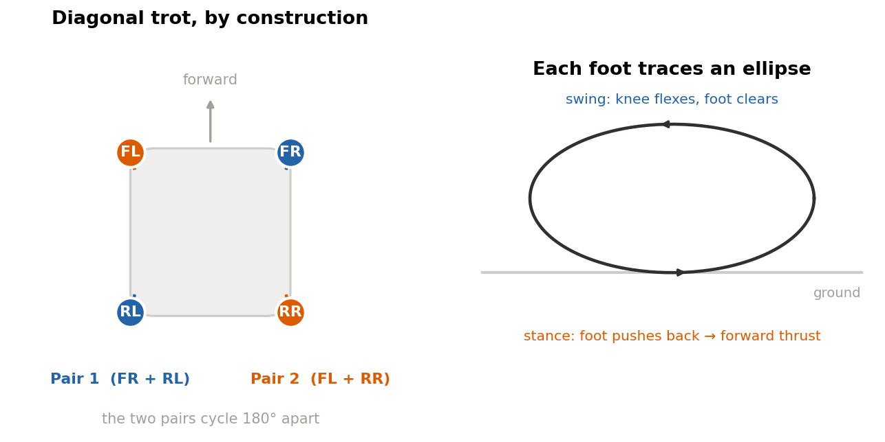
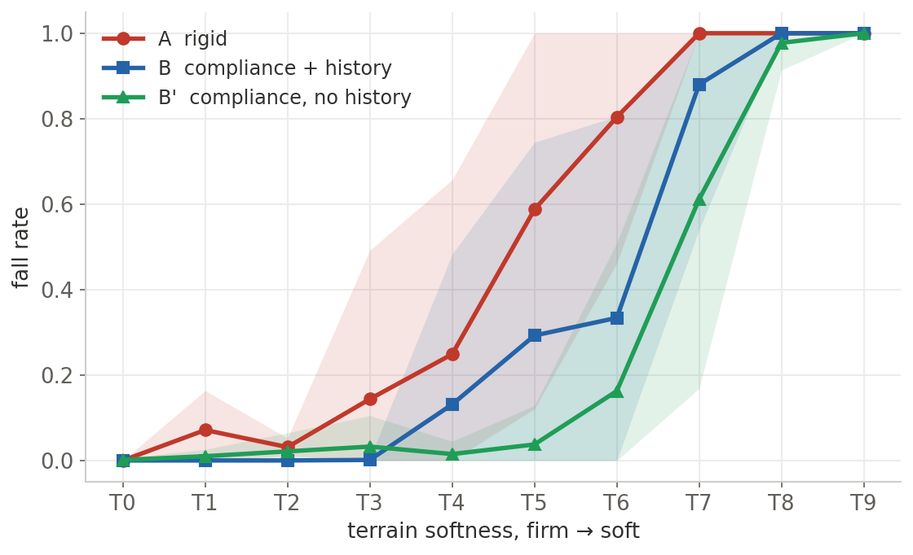
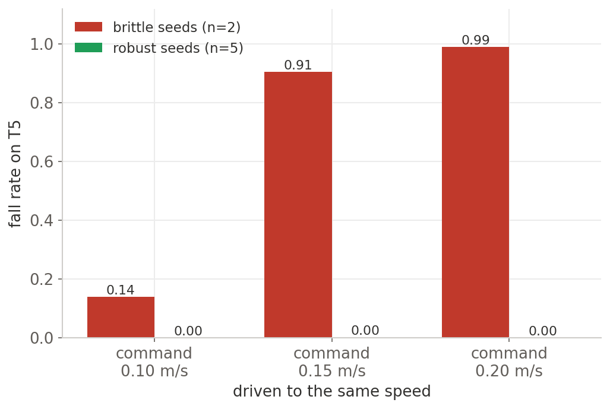
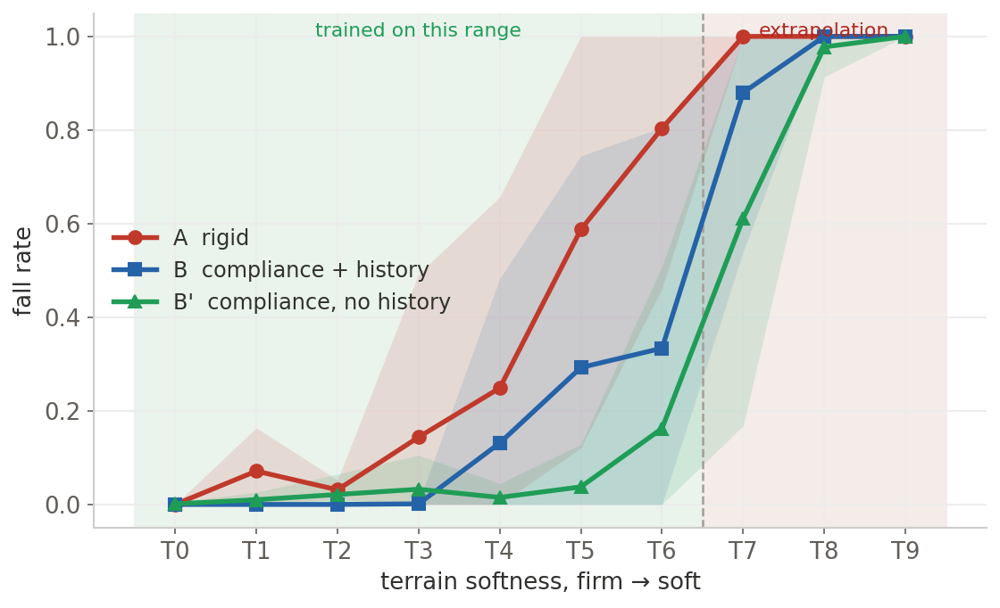

Five clean results, five times wrong
What a simulated quadruped on soft ground taught me about catching my own clean stories before they became claims.
The first clean result, and the first correction
The study is a controlled ablation. Three policies that are identical in every way except the ground they train on and the sensors they are allowed to use. I will describe the setup properly in a moment. The first time I ran the full evaluation, the numbers were perfect. The policy trained on compliant ground generalized to softer ground than the rigid policy. The version with a richer sensory history was both more robust and about a quarter more energy efficient. That was the result I wanted. It matched the paper I was building on. I almost wrote it down.
What saved me was a habit, not an insight. I re ran the whole thing on a second random seed, then a third, then eight. The clean story did not survive contact with the variance. The efficiency win shrank, flipped sign on some seeds, and turned out to depend on a definition I had been careless about. I had been counting any episode where the robot stayed upright as a success. A robot that freezes in place and does nothing also stays upright. Once I required that a successful episode involve actually moving forward, a number of my survivors were revealed to be statues, and the efficiency advantage was partly an artifact of measuring the cost of standing still.
That is the shape of every correction in this project. A clean number, a tempting reading, and a quiet test that dissolves it. By the end I trusted the process more than any single result, including the ones I liked.
The setup, in one breath
The robot is a Unitree Go1, a twelve motor quadruped, simulated in MuJoCo. The thing I vary is the softness of the ground. In MuJoCo, contact softness is a solver setting, the stiffness and damping of the contact constraint, so I can sweep a floor from rigid to spongy without changing how it looks. Every floor in this study renders as the same flat checkered plane. Only the physics underneath changes. I find that worth saying plainly, because a photo of the terrain would tell you nothing. There is nothing to see.

Walking does not emerge from reward alone here, so every policy rides on a fixed trot prior. This is an open loop pattern generator that swings the diagonal leg pairs in a walking rhythm. The neural network does not invent the gait. It outputs small corrections on top of a gait that is already propulsive by construction. When I later removed the prior and asked the policy to find a gait on its own, it learned to stand and barely shuffle, about 0.004 meters per second against a 0.2 target. The prior supplies the propulsion. The learned part is a correction, not a discovery.

The ablation is three policies, trained with an identical recipe. The same trot prior, the same reward, the same optimizer settings, the same command curriculum. They differ in exactly two ways. Policy A trains only on rigid ground. Policy B and Policy B prime train on a curriculum of contact softness. And the two compliance policies differ from each other only in what they can sense. B prime sees the current robot state, 49 numbers. B additionally sees a short history of where its feet have been, 89 numbers in total. That foot history is the piece the literature said would matter most. Holding everything else fixed is the entire point. Any difference at evaluation has exactly one cause. In the figures the no history policy is written B′.
Setup details, for the curious
The policy runs at 50 Hz and outputs twelve residual joint targets, clipped and added on top of the nominal stance and the trot trajectory. Reward is a standard nine term locomotion objective, velocity tracking plus penalties on motion, torque, and impact, with the penalty weights ramped in over training so the robot does not learn that the cheapest way to avoid penalties is to never move. Training is PPO with a timeout correction so that surviving to the end of an episode is bootstrapped as success rather than scored as a failure.
Evaluation is 100 episodes per seed per terrain, on a shared physics environment so that A, B, and B prime are judged under identical conditions. I run 8 seeds per policy. Cost of transport is computed over non fallen episodes only, and a successful episode has to make forward progress, not merely stay upright. Both of those definitions are corrections, and both of them changed conclusions, which is the subject of the rest of this post.
The tradeoff that did hold up
Strip away the wrong stories and one robust result remains. There is a clean tradeoff between peak performance and robustness, and it is monotonic.
On rigid ground, its home turf, the rigid policy A is the best athlete in the room. It is the fastest, at about 0.21 meters per second against a 0.20 target, and the most energy efficient, with the lowest cost of transport. The compliance policies are slower and thirstier on rigid ground. They traded away peak performance for something else.

That something else shows up the moment the ground gets softer than the training range. As I sweep the floor from rigid toward spongy, the rigid policy falls off a cliff. The compliance policies degrade gracefully, and they do so in a strict order. Counting how many of the eight seeds keep their fall rate below one half, at the soft terrain T5 the rigid policy A holds in 3 seeds, B holds in 6, and B prime holds in all 8. One step softer, at T6, the training edge, A holds in 1, B in 5, B prime in 7. The ordering never crosses. B prime is at least as robust as B at every single terrain, and B is always ahead of A.

It is one thing to read a fall rate off a chart and another to watch it. Here is the rigid policy on the left, walking confidently on rigid ground, and on the right the same policy, the same weights, on ground only a little softer than it was built for.

Three more clean results, three more corrections
The robustness ordering was real. Almost everything I first tried to say about why was not. Three separate times I found a clean explanatory story, and three times a direct test refused it. I have come to treat this pattern as the normal cost of doing the work honestly, so I will show each one in the same shape. The claim, the test, and what broke.
This is the one that scares me most, because it almost became a headline. There were two training scripts in the repository with names one token apart. One was the canonical recipe that produced Policy A. The other was an older, hotter recipe left over from an earlier sweep. My multi seed run picked up the wrong one, seven of eight seeds collapsed, and for an afternoon I had a dramatic finding that rigid training is barely reproducible. It was not a finding. It was a filename. Now I pin the canonical script and treat its identity as part of the result.
This one was intuitive enough that a reviewer expected it, which is exactly why it was worth checking. If a seed grinds further up the softness curriculum during training, surely it has learned more about soft ground. The data says no. Plotting each seed's final curriculum level against whether it turned out robust, the two barely relate. A seed that stalled early in the curriculum can be one of the steadiest at evaluation. The practical consequence is sharp. A model selection pipeline that picks checkpoints by curriculum progress would systematically pick the wrong ones.

This was the most tempting story of all, because the correlation is genuinely there. Faster seeds are less robust, at a correlation of minus 0.40. You can see it in the spread of the seeds. The rigid policy and the history policy are the fast ones, clustered toward low survival, while the steady, slow, no history seeds survive the most terrains.

So I tested it directly. I took the brittle seeds and the robust seeds and commanded them to walk at the same speeds, then measured how often they fell on the same soft terrain. If speed were the cause, matching speed should erase the gap. It did not. Driven to the same velocity, the brittle seeds collapsed almost every time while the robust seeds almost never fell. The only speed at which a brittle seed is safe is no speed at all. Velocity was a symptom of the real difference, not the difference itself.

The result I least wanted
All of that was scaffolding around the one prediction I most wanted to confirm, and it is the one that failed hardest. The foot contact history, the 40 extra numbers that the literature treats as essential for soft ground, did not help. B prime, the policy without history, is at least as robust as B, the policy with it, at every terrain in the transition. If anything the history hurt. The policy that could see more of its own recent motion moved faster, less conservatively, and fell sooner.
I do not have a clean mechanism for why more information made the policy worse, and I am not going to pretend one. The two honest readings are these. The richer observation may invite a more active, less steady style of adaptation that happens to be worse on soft contact. Or the larger input may simply be harder to optimize with the same training budget. Either way, the simpler policy won, and the central hypothesis of the project was wrong.
You can see the difference in how they move.

What robustness actually was
If it was not history, and not curriculum progress, and not speed, then something separated the seeds that survived softening from the ones that did not. The explanation that held up is gait quality, and specifically the steadiness of foot contact. The robust seeds settle into a gait whose foot contacts are regular and low in variance. The brittle seeds have noisier, more variable contact patterns. On soft ground, where every footfall sinks a little and the timing of support shifts under the robot, the steadier gait is the one that keeps its balance.

This property is measurable, which is more than I could say for the stories that failed. What I could not do is induce it on demand. Two attempts to make training reliably find the steady gait, a curriculum gated on competence and a small exploration bonus, both failed to remove the roughly one in eight seed that never gets there. Robustness here is a discrete outcome that some training runs reach and some do not. I can see it after the fact, in the contact variance. I cannot yet reach in and turn it on.
Where it stops
None of this is open ended. Compliance training widens the band of survivable softness. It does not grant extrapolation. Past the training edge the margin is thin. B prime holds in 3 of 8 seeds one step beyond, B in 1, A in none, and one step further than that every policy collapses to near total falls. The graceful part of the degradation lives almost entirely inside the trained range.

So the defensible claim is narrow, and I want to state it narrowly. Randomizing contact softness during training extends the survivable softness range of a trot prior residual policy. It does not solve soft ground locomotion, and the gain it does buy is uneven from seed to seed.
What I actually learned
The scientific result is a modest, bounded, somewhat deflationary version of the one I set out to prove. Training on varied contact softness does help a quadruped generalize to softer ground, within limits. The richer proprioception that was supposed to be the key ingredient did not help. And the robustness that does appear is a fragile, seed dependent property of the gait that I can measure but not yet reliably produce. The more durable lessons are about method.
Single seed deep reinforcement learning results are not evidence.
With seed to seed variance as large as the effect I was studying, one run reports the identity of one lucky initialization. Every headline in this project that came from a single seed was wrong. The fix is not clever. It is to pay for eight seeds before believing anything.
Provenance is a research result, not a chore.
The scariest mistake was not a bad idea. It was running the right evaluation against the wrong checkpoint, produced by a stale script with a name one token off from the real one. It nearly became a published claim that rigid training is unreliable. Now I pin the canonical script and treat a filename like a dependency I have to verify.
The story that ships is the one that survived an attempt to break it.
Convergence predicts robustness. Slower is safer. History matters. Each was clean, each fit a prior, and each failed a direct test. The version of this work that I trust is the residue left after I tried to falsify every part of it I liked. The parts I liked least are the parts that survived.
Negative results are the product.
Most of the value here is in what did not hold. The history requirement, the efficiency win, the curriculum and speed explanations. Stating precisely what is not true, and how I found out, is the contribution. Here is the tally again, settled this time.
- ✗Foot contact history is required to survive soft ground.
- ✗Compliance training pays for itself with a clean efficiency win.
- ✗Rigid training barely works, only 1 seed in 8.
- ✗A seed that climbs higher up the curriculum is the more robust one.
- ✗Slower gaits are safer. Speed is what gets the robot into trouble.
- ✓Robustness is a soft contact stable gait that some seeds find and some do not. Measurable as low foot contact variance.
There are obvious next steps. Reward the steady gait directly and see whether robustness becomes reliable. Find out why history hurts, by shrinking it or by giving the larger policy more training and seeing if the gap closes. Move from solver level softness to genuinely deformable ground, the foam and mud version of the problem. Add slopes, payloads, and pushes, to learn whether the simpler policy keeps winning when the axis of difficulty changes. Each is its own experiment. Given the track record of this project, probably its own correction.
I set out to show that soft ground training plus richer sensing makes a quadruped robust to soft ground. Soft ground training helped, a little, within bounds. The richer sensing did not. And the robustness turned out to be a quiet property of the gait that I only learned to see by watching five cleaner explanations fail.